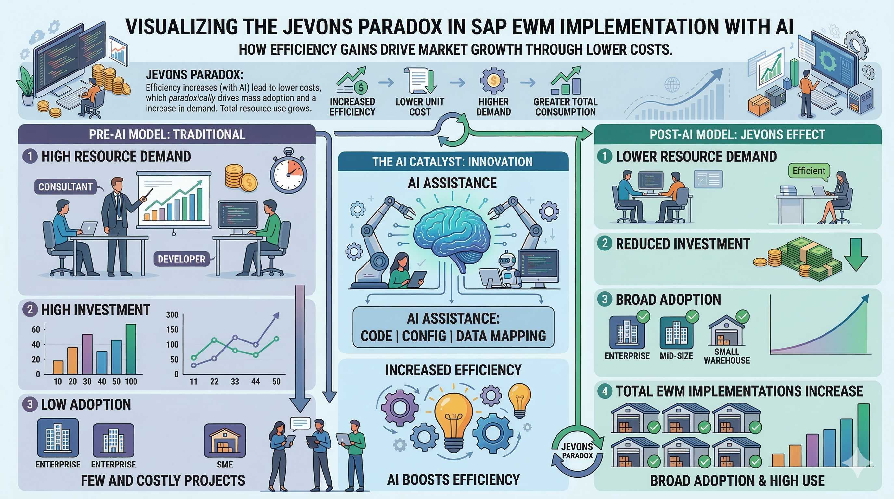

Will AI Really Kill SAP Functional Consulting? (Why Noel D'Costa is Only Half Right)
I woke up this morning and was still Hendrik, still alive, and I still had something to do - despite the fact that I call myself something like a functional consultant. With this post, I will explain to you why I think this will still be the case for many years to come and why Noel D'Costa is wrong with his assumption that SAP consulting is about to die within the next two years.
Noel's video has been trending with some pretty bold claims. Noel, at the end of your video, you specifically ask for feedback. My son told me a real YouTuber has to make reaction videos, so here is mine! I've been in the EWM world for over 15 years, and I use AI every day. While your thumbnail looks like the cover of a horror movie, I find your arguments less frightening when viewed through the lens of a complex module like SAP EWM.
I am specifically talking about SAP EWM here. While some points might apply to other modules, my argumentation is centered around the reality of the warehouse floor. Noel does not exclude any specific module, so he must live with the fact that I am countering his claims with the physical reality of a functioning warehouse.
Shift 1: AI is Automating the Routine WorkNoel's thesis is that because AI agents can handle routine work, the economics shift to favor drastically smaller teams, reducing the demand for functional consultants. I agree 100% that routine work at a PC will be taken over by AI. But here is my question: Whose routine are we automating? I have rarely seen functional consultants executing daily business tasks like warehouse clerks do - that's the job of users and key-users.
My Counter-Thesis: Routine work will be automated, but functional consultants will become the ones who pick and train the agents. There won't be only one agent; someone has to pick the right one for the business process and train it to handle complex wave release logic or priority deliveries. This increases the demand for people who understand the business process, SAP functionality, and AI capabilities.
Shift 2: "Clean Core" is Killing CustomizationsNoel argues that knowledge outside standard code becomes "technical debt," decreasing the demand for consultants who design enhancements. I am a big proponent of staying close to the EWM standard, but Noel acts like custom coding is dead just because SAP is pushing for a "Clean Core".
My Counter-Thesis: Options to enhance standard processes without embedding them in the core will increase. In reality, we are seeing more Cloud BAdIs and APIs for side-by-side extensions released every month. Businesses will always protect the unique processes that give them a competitive advantage. The toolbox isn't shrinking; it's just becoming more professional.
If you want to browse through the options a little bit, explore the links below:
- SAP Developer Extensibility (On-Stack) and Cloud BAdIs
- SAP Build "“ Low-Code Application Development
- SAP Integration Suite
- SAP Business AI
Noel suggests that Joule and Fiori will empower non-technical users to configure the system themselves. I call this "Vibe-Customizing". While Fiori simplifies things and Joule is great for data visualization, I cannot see a world where users "vibe-customize" complex warehouse processes.
My Counter-Thesis: AI only works if it meets domain expertise. Prompts are only as effective as the knowledge of the person writing them. For high-complexity operations, "vibe-customizing" by someone who does not know the details of the system is a myth. Do we honestly expect a warehouse manager to "vibe-customize" their way through destination determination and Warehouse Order Creation Rules (WOCR)?
Reviewing the "Excuses"Noel lists several "excuses" he hears from consultants. Let's look at the reality:
- The $180/hr Junior: Noel says firms won't be able to bill juniors at high rates. If that business model breaks, good - it keeps our industry competitive. For the juniors: AI is a powerful mentor to reach senior levels faster than I ever could.
- Clean Code Migration: This transition will be handled by the functional consultants and developers of today. You will learn new skills and prepare for the technology around the clean core.
- Specialized Industries: Human "experts in the loop" will remain due to strict legal and compliance reasons. AI will reduce the demand for experts, but it won't replace them entirely.
- Business Understanding: You still need a deep understanding of architecture to translate business into system-thinking. Business without software background will simply not work.
- The 5-to-10-Year Migration: Noel ignores the massive wave of S/4HANA migrations happening right now. This is where consultants will learn and transition into new technologies within real-life projects.
Noel predicts a shift for SD/FI in 12 months and PP/QM in 18 months. I agree with the sequence: the more interaction a module has with the physical world, the harder it is for AI to replace the consultant. EWM has its spot at the very end of that list - the final boss for AI automation.
Noel's Advice: The "Business Knowledge" ParadoxNoel advises becoming the person who tells the business what to do instead of telling the system what to configure. This has always been the core of functional consulting; a good consultant could never succeed without business knowledge.
Ironically, Noel concludes with a long list of things consultants can do to support businesses on their journey. With this list, he more or less disproves most of what he said before, providing arguments for why functional consultants are exactly what companies deeply need to survive this transition.
Conclusion: Expanding the PieNoel paints a picture of a war against AI. I think this is wrong - at least for SAP EWM. I think AI is our savior because it helps us solve the 10,000-hour implementation trap. Currently, implementations are so expensive that many companies are priced out of the market.
The Jevons Paradox: If AI helps us reduce that effort by 50%, EWM becomes an attractive business case for thousands of companies who previously got priced out. Efficiency creates more demand, not less. We are not reducing the demand; we are expanding the pie.

Just because I think Noel's timeline is wrong doesn't mean you can lean back. You will have to learn new things - this has always been the job. Be awake, stay up to date on AI capabilities, and improve the skills AI cannot take: physical process design, stakeholder negotiation, and complex architectural orchestration.
AI won't just cover tasks; it will enable you to do things you weren't able to do before.
I've been here for 15 years, and I'm ready for the next 15 - hand in hand with AI :-).
📧 Newsletter
Get updates about new blog posts directly in your inbox.
▶️ YouTube Channel
Subscribe to my channel for regular tutorials & insights about SAP EWM.